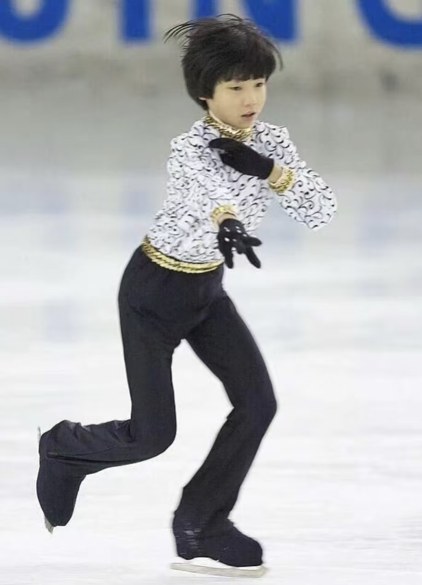
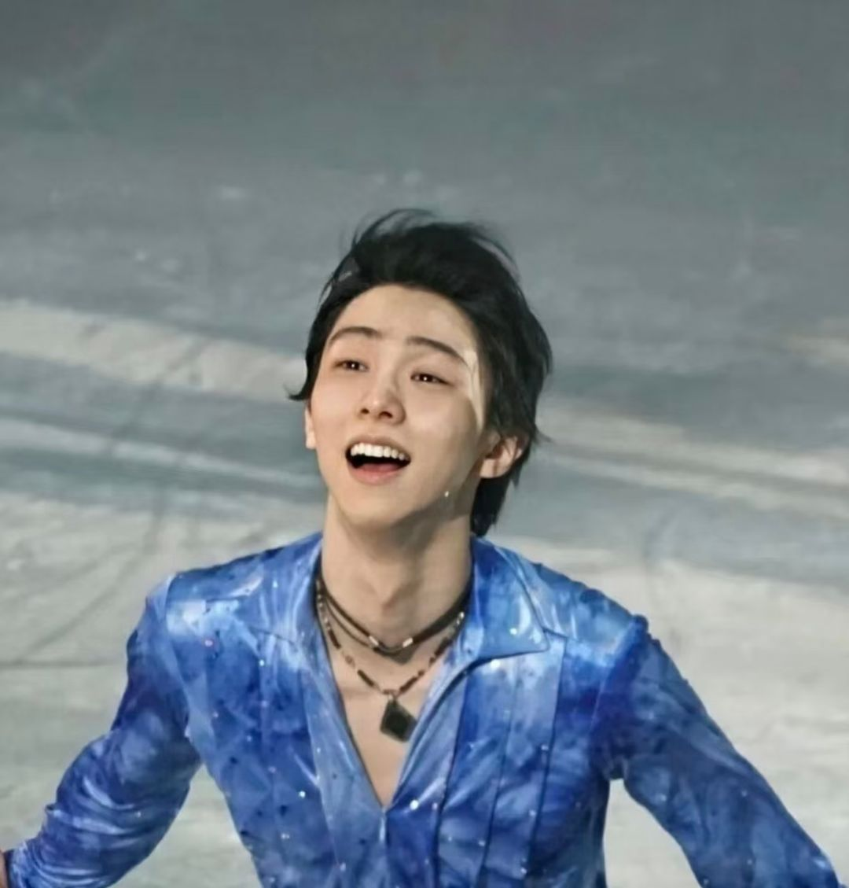

2004年：因地震与花滑结缘
9岁的羽生结弦因家乡仙台遭遇地震，为了锻炼体能、克服对地震的恐惧，开始系统学习花样滑冰。启蒙教练佐藤久美子发现其天赋，重点培养滑行基础和乐感。

9岁的羽生结弦因家乡仙台遭遇地震，为了锻炼体能、克服对地震的恐惧，开始系统学习花样滑冰。启蒙教练佐藤久美子发现其天赋，重点培养滑行基础和乐感。

15岁的羽生结弦参加世界青年花样滑冰锦标赛，以总分216.10分夺冠，成为日本首位世青赛男单冠军，正式进入国际花滑界视野。
19岁的羽生结弦在索契冬奥会以总分280.09分夺冠，成为自1952年以来最年轻的冬奥会花滑男单冠军，同时实现青年组与成年组全满贯。

羽生结弦在平昌冬奥会克服脚踝伤病，以短节目111.68分、自由滑206.17分，总分317.85分卫冕冠军，成为66年来首位卫冕冬奥会男单冠军的选手。
北京冬奥会后，羽生结弦宣布退出竞技赛场，转为职业花样滑冰选手，专注于冰演和花滑文化传承，推出个人冰演品牌「PROLOGUE」。